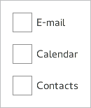

Frame QML Type
Visual frame for a logical group of controls. More...
Detailed Description
Frame is used to layout a logical group of controls together within a visual frame. Frame does not provide a layout of its own, but requires you to position its contents, for instance by creating a RowLayout or a ColumnLayout.
Items declared as children of a Frame are automatically parented to the Frame's contentItem. Items created dynamically need to be explicitly parented to the contentItem.
If only a single item is used within a Frame, it will resize to fit the implicit size of its contained item. This makes it particularly suitable for use together with layouts.

Frame { ColumnLayout { anchors.fill: parent CheckBox { text: qsTr("E-mail") } CheckBox { text: qsTr("Calendar") } CheckBox { text: qsTr("Contacts") } } }
See also Customizing Frame and Container Controls.